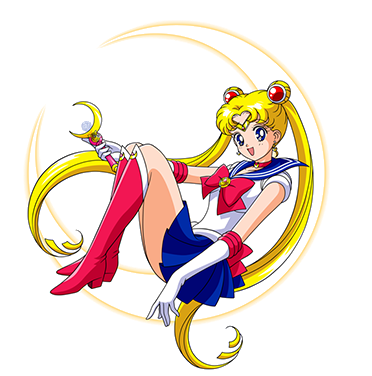
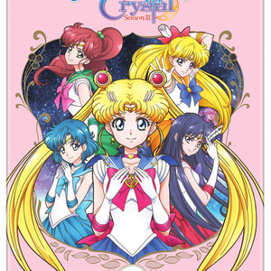

Sailor Moon es una serie de manga escrita e ilustrada por Naoko Takeuchi en 1992. El manga se hizo particularmente famoso por volver a popularizar con gran éxito el subgénero de las magical girls. Saltó al anime casi simultáneamente a su publicación en papel en 1992, generando 5 temporadas con un total de 200 capítulos.
conocido en Japón como Pretty Guardian Sailor Moon Crystal, es un webanime de 2014 producido por Toei Animation. El objetivo de Crystal es ser una versión más fiel de la historia original creada por Naoko Takeuchi, y hasta el momento llevan tres arcos.
Con información de
Sailor Moon Wiki